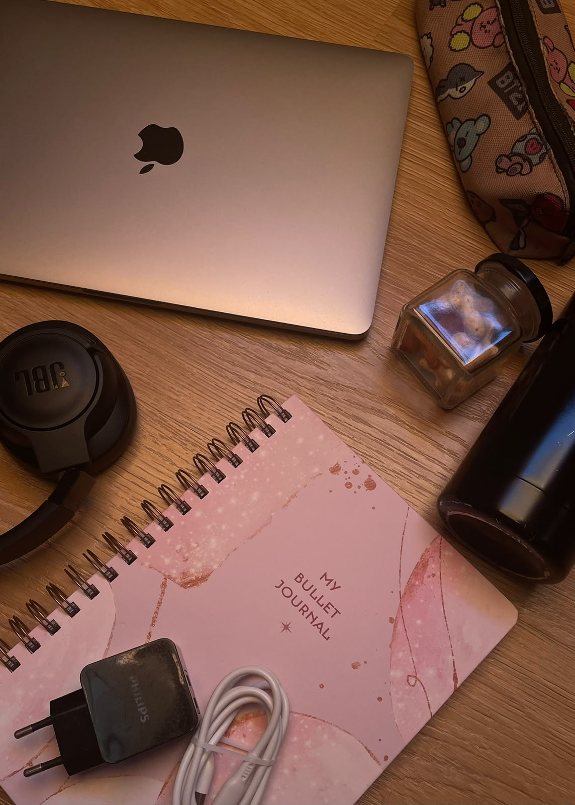
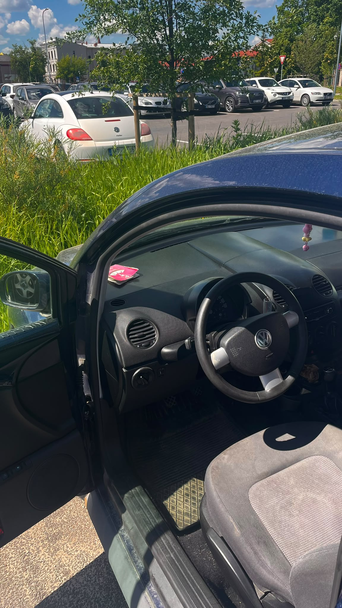
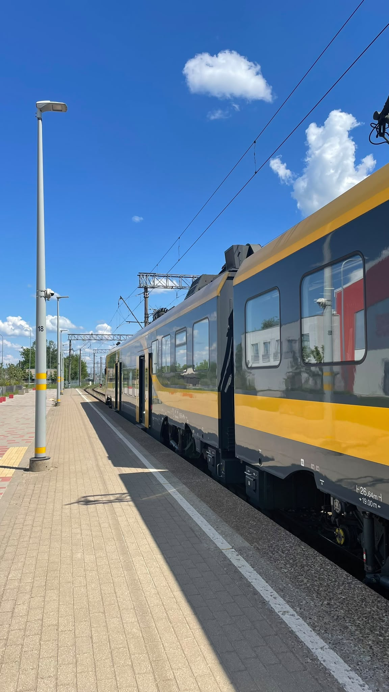
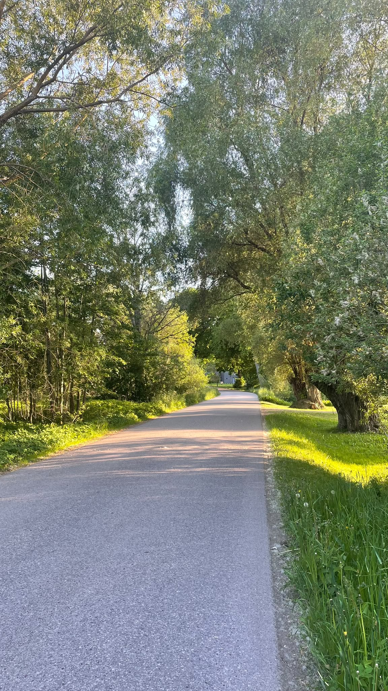
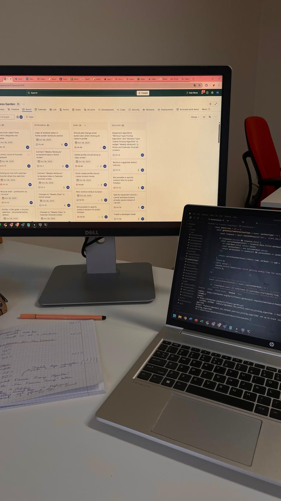
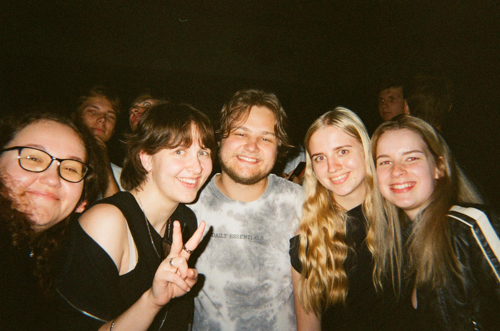

Viena darba nedēļa
Ikdiena starp lekcijām, programmēšanu, kafiju un ārpusstudiju aktivitātēm.

Portatīvais dators ir mana galvenā studiju darba vide. Tajā tiek pildīti programmēšanas uzdevumi, veidoti praktiskie darbi un rakstīti studiju projekti. Gandrīz katra studiju diena sākas ar datora atvēršanu auditorijā.
Austiņas palīdz koncentrēties brauciena laikā uz universitāti, mācoties bibliotēkā vai strādājot pie uzdevumiem starp lekcijām. Tās ļauj vieglāk norobežoties no apkārtējā trokšņa.
Lai gan lielākā daļa materiālu pieejami digitāli, svarīgākās idejas un piezīmes bieži tiek pierakstītas kladē. Tas palīdz ātrāk sakārtot informāciju un sagatavoties pārbaudījumiem.
Ūdens pudele ir neatņemama ikdienas sastāvdaļa. Tā palīdz saglabāt enerģiju un koncentrēšanos garajās studiju dienās universitātē.
Garās dienās universitātē lādētājs ir tikpat svarīgs kā pats dators. Tas nodrošina iespēju strādāt visas dienas garumā neatkarīgi no lekciju skaita vai projekta apjoma.
Penālī vienmēr atrodas nepieciešamie rakstāmpiederumi pierakstiem, uzdevumu risināšanai un dažādu ideju skicēšanai lekciju laikā.
Studiju dienas bieži ilgst līdz vakaram, tāpēc līdzi tiek ņemtas arī pusdienas. Tas ļauj ietaupīt laiku starp lekcijām un nodrošina enerģiju visai dienai.

Studiju diena sākas ar braucienu līdz vilciena stacijai. Šis ir laiks, kad varu mierīgi pamosties un noskaņoties dienai, klausoties savu iecienītāko mūziku. Lai gan ceļš nav ilgs, tas ir pirmais posms ceļā uz universitāti.

Brauciens ar vilcienu paiet dažādi - dažreiz pārskatu lekciju materiālus vai pabeidzu kādu studiju uzdevumu, citreiz klausos mūziku, sarunājos ar draugiem vai vienkārši izmantoju laiku nelielai atpūtai pirms lekcijām.
Pēc ierašanās universitātē diena var sākties ļoti dažādi - reizēm ar lekciju, reizēm ar praktisko darbu. Lielākā daļa laika tiek pavadīta auditorijās vai pie datora, apgūstot jaunas zināšanas un strādājot pie studiju uzdevumiem.
← Velciet pa kreisi vai pa labi →
← Velciet pa kreisi vai pa labi →
Burbuļu izmēri attēlo katra digitālā rīka nozīmi un lietošanas biežumu studiju ikdienā.
Jo lielāks burbulis, jo būtiskāka loma tam ir manā mācību procesā.

Pēc garām lekciju dienām pastaigas palīdz atpūsties un sakārtot domas. Tā ir iespēja izrauties no datora, izbaudīt svaigu gaisu un atgūt enerģiju nākamajai dienai.

Ikdienā studijas tiek apvienotas arī ar darbu, kas palīdz attīstīt atbildības sajūtu, plānot laiku un iegūt jaunu pieredzi ārpus universitātes vides.

Laiks ar draugiem ir svarīga līdzsvara daļa starp studijām un atpūtu. Kopīgas sarunas, izbraucieni vai vienkārši mierīgi vakari palīdz atslēgties no ikdienas steigas.